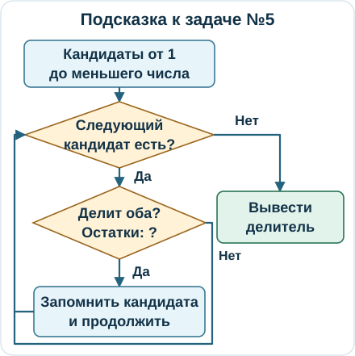
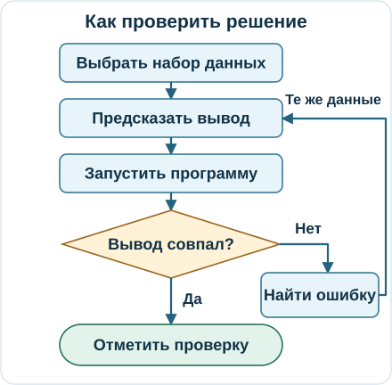

Выбор действия, повторение и проверка граничных случаев
Продолжите общий блок математических задач. Примените цикл for и условие if из предыдущей статьи к поиску наибольшего общего делителя, а when — к выбору действия в калькуляторе. Работайте в OpenIDE или Kotlin Playground в режиме JVM. Для каждого запуска задавайте данные прямо в коде через val и меняйте их для самопроверки.
Задача №5. Наибольший общий делитель
Задайте в Gcd.kt два целых числа a и b. Если хотя бы одно выходит за пределы 1..1000, выведите Введите числа от 1 до 1000 и пропустите поиск. Для допустимых чисел найдите и выведите их наибольший общий делитель (НОД) перебором.
Положительное число divisor делит a, если остаток a % divisor равен нулю. Общий делитель должен делить оба числа. Например, общие делители 8 и 12 — это 1, 2 и 4. Самый большой из них — 4. Для своей программы определите, почему достаточно перебирать числа от 1 до меньшего из двух входных значений. Для меньшего значения можно использовать minOf(a, b).
Блок-схема-подсказка к задаче №5

Задача №6. Калькулятор четырёх операций
В файле Calculator.kt задайте два числа типа Double и символ operation в одинарных кавычках. Дробные числа в коде записывайте с точкой. Через when (operation) выберите действие и выведите один результат.
Значение operation |
Действие |
|---|---|
'+' |
Сложите числа. |
'-' |
Вычтите второе число из первого. |
'*' |
Умножьте числа. |
'/' |
Проверьте второе число через if. Если оно равно 0.0, выведите На ноль делить нельзя. Иначе разделите первое число на второе. |
| Любое другое | Выведите Неизвестная операция. |
Проверьте обычные и граничные случаи
Для каждого набора сначала запишите ожидаемый результат. Меняйте значения в начале программы, запускайте её и сверяйте результат с прогнозом.

| Задача | Данные для запусков | Что проверить |
|---|---|---|
| №5 | (48, 18), (49, 20), (9, 9), (1, 25), (20, 0) |
Общий делитель больше 1, взаимно простые числа, равные числа, нижнюю границу допустимых данных и ноль. |
| №6 | 7.5 и 2.0 по очереди с '+', '-', '*', '/' |
Каждую арифметическую ветку и дробное частное. |
| №6 | 7.5 и 0.0 с '/', затем с '*' |
Ошибку деления на ноль и допустимое умножение на ноль. |
| №6 | 7.5 и 2.0 с '?' |
Сообщение для неизвестной операции. |
Покажите результат
Сохраните решения в отдельных файлах .kt. К концу этой пары подготовьте список решённых задач из общего блока №1–6. На общей проверке покажите список, выберите одну решённую задачу и измените в ней исходные данные на обычный или граничный случай. Назовите ожидаемый результат, выполните один запуск и сравните вывод с прогнозом.
Если обе среды запуска недоступны, покажите список задач, для которых записали алгоритм и ожидаемые результаты. На примере одной задачи объясните, как изменится результат при смене данных. Укажите «без запуска» у этих решений.